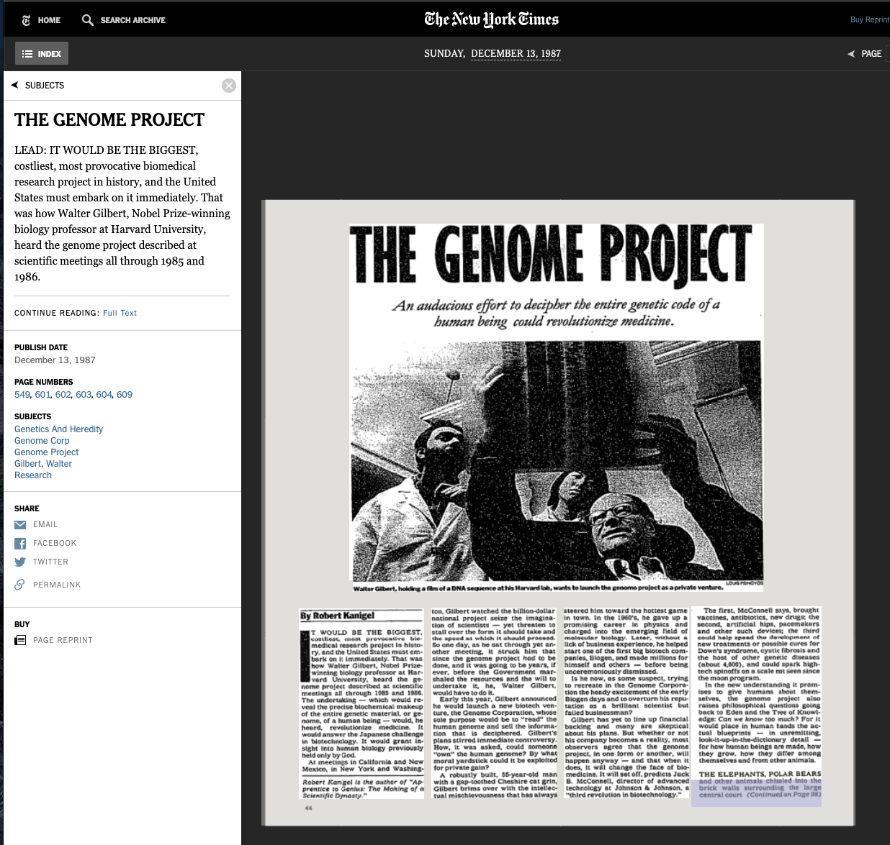
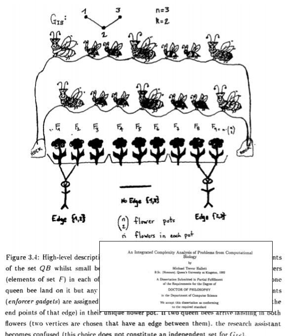
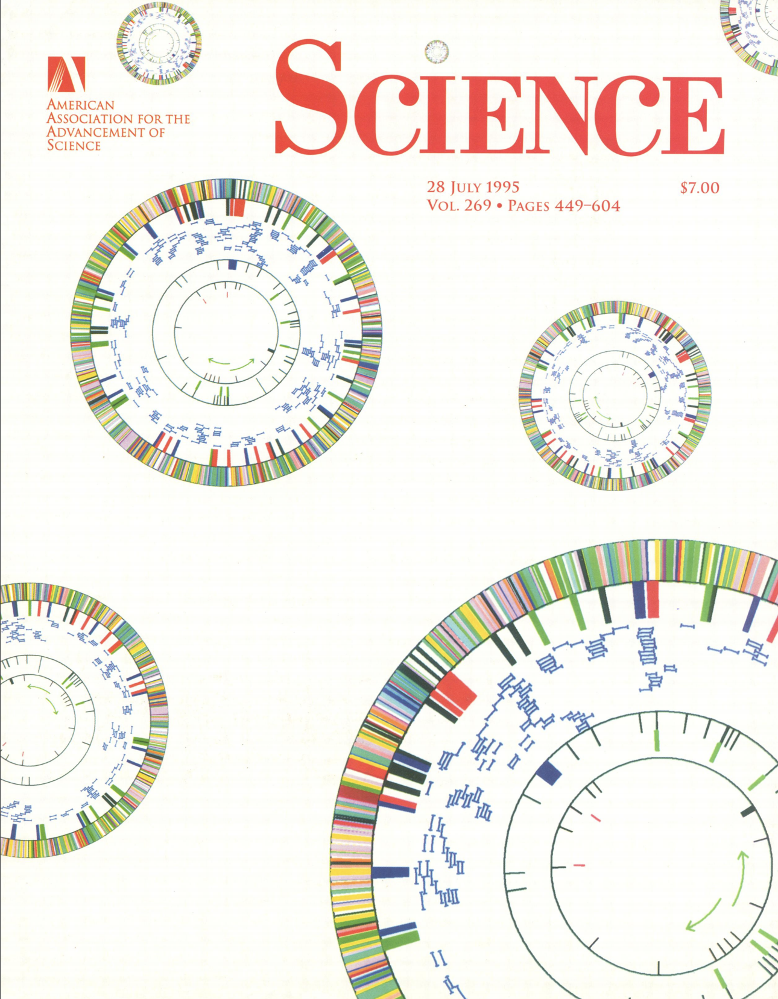
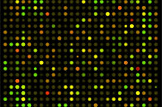
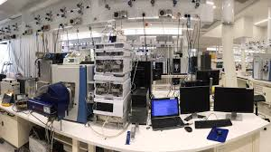
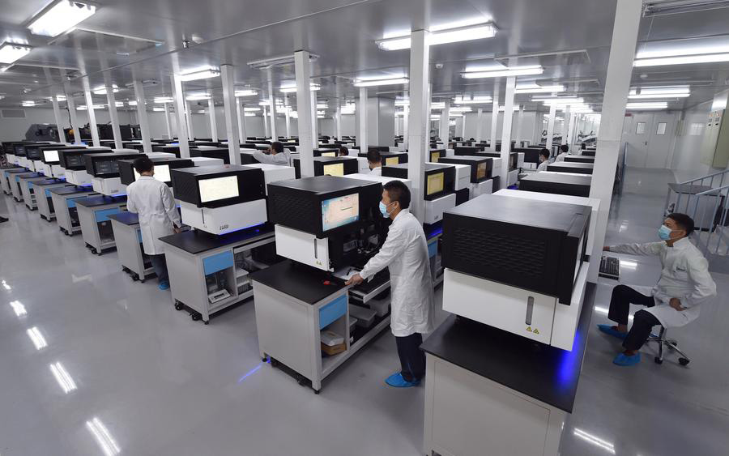
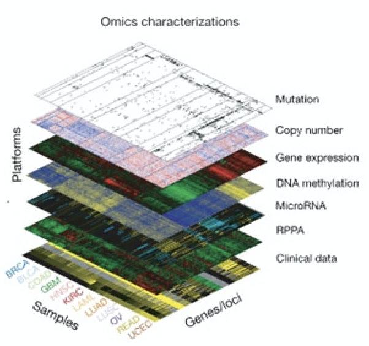
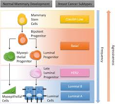
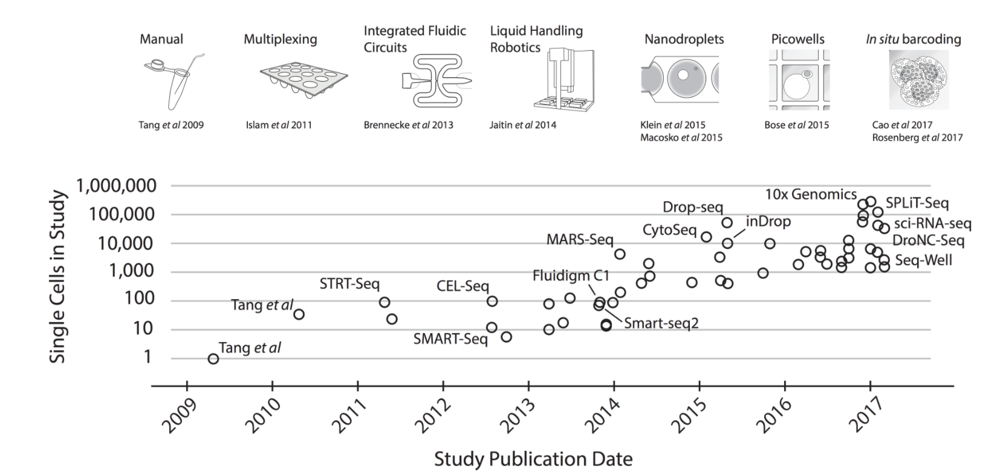

Left is our website; Right is a live action shot of the group preparing for our yearly workshop at the Bellairs Research Insitute, Barbados.
Early ’90s
 
Left. Me doing my PhD at the Univerity of Victoria and Sombrio Beach; Centre Early efforts to push the Human Genome Project forward; Right. A figure from my PhD thesis.
Mid- to Late-’90s

Left: Zuerich. Center: 1st genome, H. influenzae 1.8M base pairs. (1995). Right: 1st complete draft of H. sapiens 3.7B b.p. (2001)
Even for the bacteria like H. influenzae, slow-throughput technologies were simply not enough to sequence complete genomes. It took high-throughput approaches to make it feasible.
\(1,800,000 = 1.8 \cdot 10^6\) vs \(3,600,000,000 = 3.6 \cdot 10^9\) base pairs. Three orders of magnitude in \(5\) years.
Rapid growth and diversification
In addition to increased sequencing capacity, many other high-throughput technologies that measured different levels of the centra dogma of biochemistry came on-line.
 
Left: Microarrays for transcriptomics. Center: Robotic screening facilities for drug discovery. Right: Mass spectrometry for proteomics.
And many additional “-omics” approaches.
Technology based on robotics, micromanipulation, nanofabrication, lasers, photolithography, microfluidics, microscopy …
Driven by a better understanding of protein and small molecule biochemistry, and a robust calculus of ways to manipulate nucleic acids (molecular biology).
2000’s
I moved to McGill as a professor in 2000. Became interested in cancer genomics and informatics.
The early 2000s saw a commoditization of equipment, the ability to apply these technologies in human contexts, and the development of so-called core facilities.
  
Left: BGI (China) Sequencing Facility. Center: Coordinate efforts such as TCGA to profile cancers at many levels. Right: Breast cancer has many molecular diverse subtypes.
2010’s
Moved to Concordia in 2018. We are interested in how cells are wired (the molecular network), how this wiring can change in response to stimuli, and how the changes in the network provide cells with advantages.
Left: No CRISP/Cas9 doesn’t really look like this. Right: Indeed, Synthetic Biology does involve tiny women changing colourful nucleotides.
Single cell profiling have blossomed, permanently changing every area of life science research.

Bioinformatics, Computational Biology and Data Science
[Data Science in Biology] The ability to develop software and analytic approaches to wrangle with biological data, clean it up, kick it into shape and visualize it in a way that is both informative and honest.
[Bioinformatics] The development of tools, portals and databases to make biological information available to all life scientists.
[Computational Biology] The development of new analytic techniques, typically expressed as computer programs, to explore biological data and test hypotheses.
This course will you give you the fundamentals in all three disciplines with an emphasis on data science.
Computational Biologist
Ice Hockey \(\mapsto\) huh?
Hot Sun, Hard Rock… and many other useless adjectives.
Field Hockey \(\mapsto\) unfortunate misuse of word “hockey”.
Field Ball-Club Game \(\checkmark\)
(Road Hockey … ok English is weird sometimes … a valid Canadian game in summer)
\(\Rightarrow\) Hockey is ice hockey, therefore “ice” is obvious from the context and therefore no need to state explicitly.